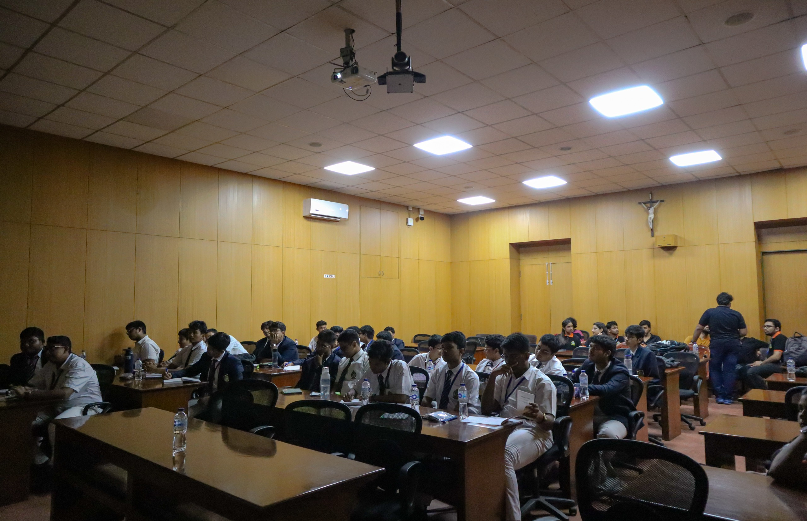

VOYAGER 2025

VOYAGER 2025
20th November, 2025
Voyager 2025 initiated the Xaverian Astronomical Society’s journey in the session 2025–26 and celebrated the remarkable contributions of Father Eugene Lafont in advancing astronomy at St. Xavier's College (Autonomous), Kolkata, through the customary Father Eugene Lafont Memorial Lecture.
ASTROVAGANZA 2025

ASTROVAGANZA 2025
26th February, 2025
Astrovaganza the flagship event of the Xaverian Astronomical Society was set to commence from 26th February to 28th February 2025, encompassing the celebration of National Science Day 2025 on the third day.
VOYAGER 2024

VOYAGER 2024
27th September, 2024
St. Xavier's College (Autonomous), Kolkata, inaugurated the 2024–25 session of the Xaverian Astronomical Society (XAS) on 27th September 2024 with an event titled Voyager, organised in celebration of National Space Day, observed on 23rd August 2024, jointly organised by XAS and the Xaverian Debating Society.
NATIONAL SCIENCE DAY 2024

NATIONAL SCIENCE DAY 2024
28th February, 2024
The Xaverian Astronomical Society, in association with the Postgraduate and Research Department of Physics, organised the National Science Day celebration on 28th February 2024 in St. Xavier’s College (Autonomous), Park Street, Kolkata.
SUMMER SCHOOL 2024

SUMMER SCHOOL 2024
19th July, 2024
Hands-on Astronomy at F.E.L.O 2024, organised by the Xaverian Astronomical Society, was the concluding societal event of XAS for the academic session 2023–24. The two-day summer workshop was designed for students of Classes XI and XII from St. Xavier’s Collegiate School and Don Bosco School, Bandel.
ASTROVAGANZA 2024

ASTROVAGANZA 2024
2nd April, 2024
The postgraduate and research department of physics in association with the Xaverian Astronomical Society organized a joint event, Astrovaganza'24 and Father Eugene Lafont Memorial Lecture'24. On this auspicious occasion, Prof. Dibyendu Nandi from IISER Kolkata was invited to deliver a lecture in memory of Father Lafont.
ASTROVAGANZA 2023

ASTROVAGANZA 2023
13th October, 2023
The Xaverian Astronomical Society (XAS) celebrated its inauguration after being officially recognised as a society of St. Xavier’s College (Autonomous), Kolkata. To commemorate this milestone, XAS organised a seminar followed by a quiz competition at the Seminar Hall of the Department of Education.
SUMMER SCHOOL 2023

SUMMER SCHOOL 2023
7th July, 2023
The Xaverian Astronomical Society of St. Xavier’s College, Kolkata, organised a summer workshop titled Hands-On Astronomy at F.E.L.O. for students of Classes XI and XII of St. Xavier’s Collegiate School. Held on 7th and 8th July 2023, the workshop aimed to introduce students to fundamental concepts of Astronomy.
AIMING FOR THE STARS

AIMING FOR THE STARS
25th March, 2023
On 25th March 2023, the women of the Xaverian Astronomical Society (XAS), in collaboration with the Postgraduate and Research Department of Physics, organised a science-cum-astronomy awareness session titled “Aiming for the Stars” under the guidance of the National Service Scheme (NSS).